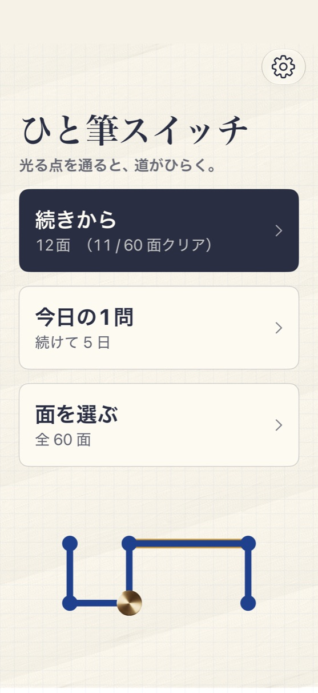
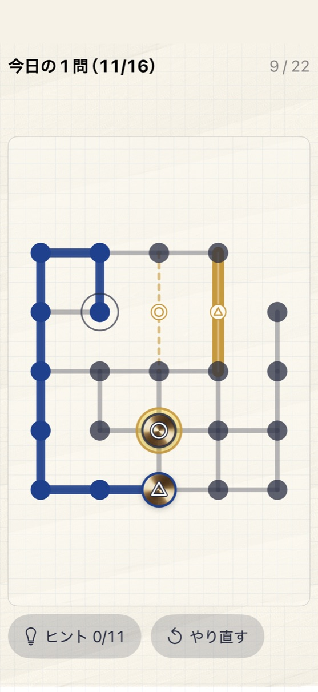
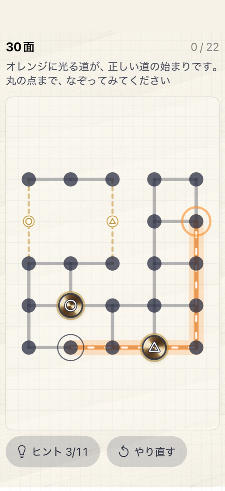

FEATURES
できること
一筆でつなぐ
二重の丸から、指を離さずに全部の点をなぞります。1つ前の点へ戻ると、線を1つ消せます。
光る点で道がひらく
金色の点を通ると、点線の道が「カチッ」とひらきます。どの点を先に通るかが、解くかぎです。
60面＋今日の1問
やさしい面から少しずつ難しく。毎日1問、みんな同じ問題が出て、続けた日数も残ります。
ヒント
詰まったら、正しい道がオレンジに光ります。
SCREENS
画面



PRICE
値段
無料
¥0
- 全60面と今日の1問
- ヒント（面の大きさに合わせて何回かまで。その後は短い動画を見ると出ます）
- 画面の下と面の合間に広告
広告なし
¥600（買い切り）
- 広告が全部消える
- ヒントが見放題
2026年12月13日までに入れた方へ
2026年12月13日までにこのアプリを入れた方は、買わなくてもずっと広告なし・ヒント見放題です。
2026年12月13日までにこのアプリを入れた方は、買わなくてもずっと広告なし・ヒント見放題です。
FAQ
よくある質問
どの面も解けますか？
はい。すべての面は、解けることをプログラムで確かめてから入れています。詰まったらヒントを使ってください。
金色の点が2つある面で、どの道がひらくか分かりません
金色の点と、その点でひらく道には、同じ印（○△□）が付いています。
進み具合は引き継げますか？
進み具合はiPhoneの中だけに保存しています。アプリを削除すると、進み具合も消えます。
「広告なし」を買ったのに広告が出ます
設定（はじめの画面の右上の歯車）→「購入を復元」を押してください。購入に使った Apple アカウントでサインインしている必要があります。
SUPPORT
サポート
不具合・ご要望・ご質問は、メールでお知らせください。
お使いのiPhoneの機種・iOSのバージョン・アプリのバージョン（アプリの設定のいちばん下のバージョン）を書いていただけると、早く調べられます。